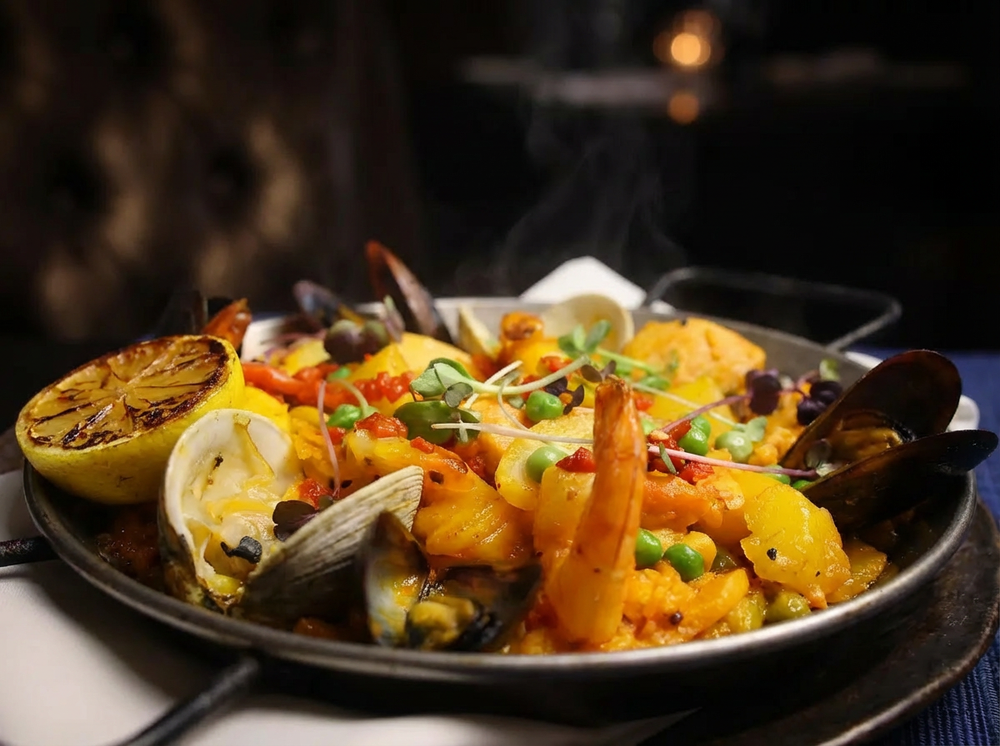
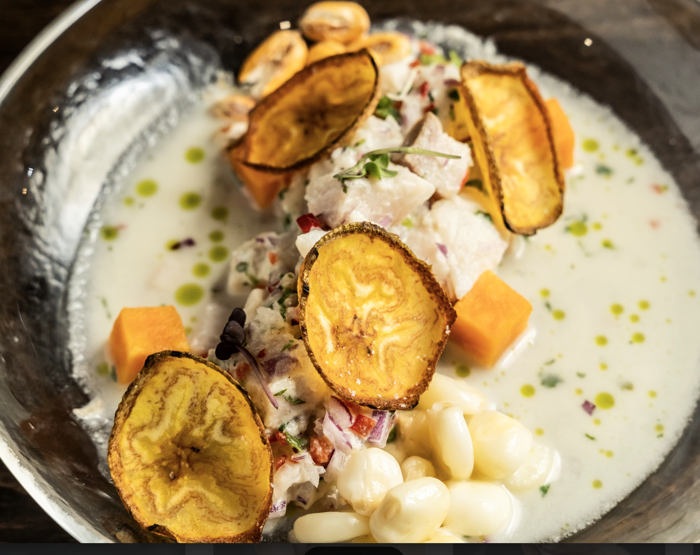
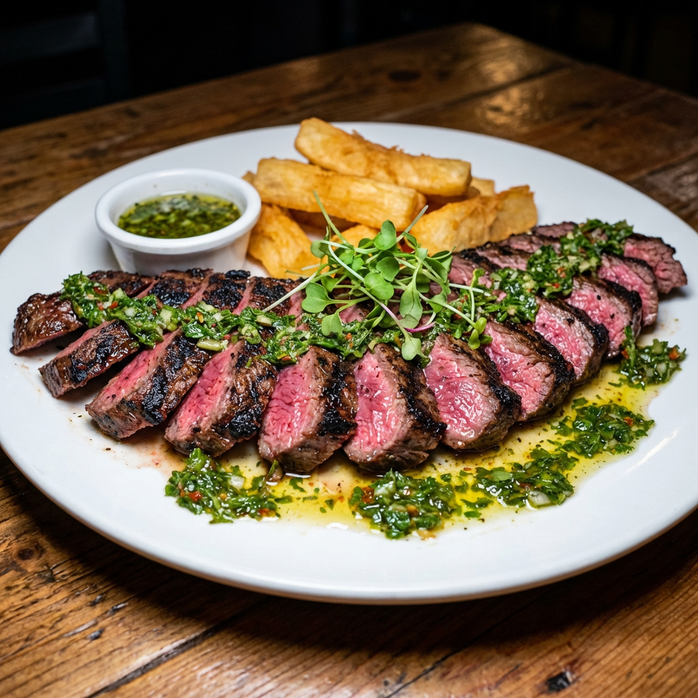
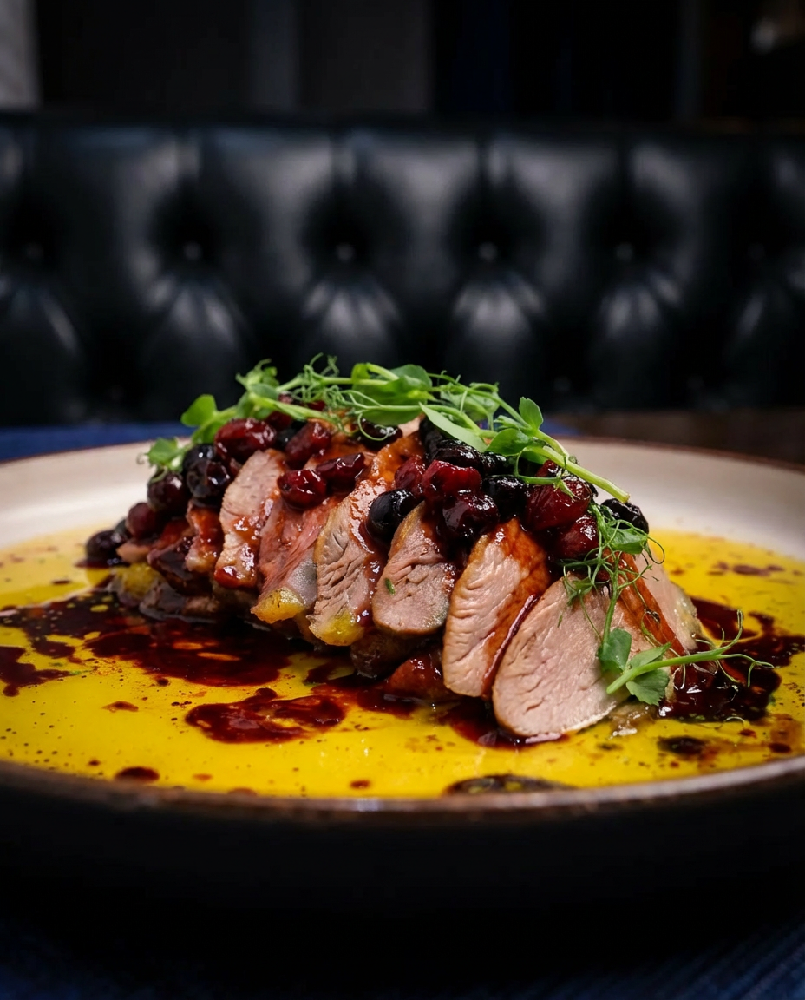
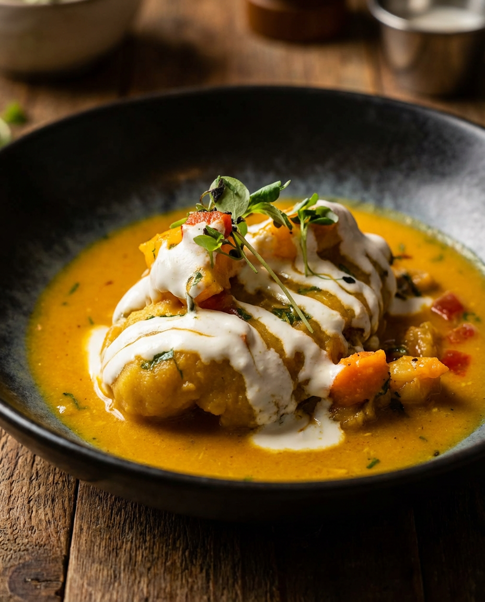
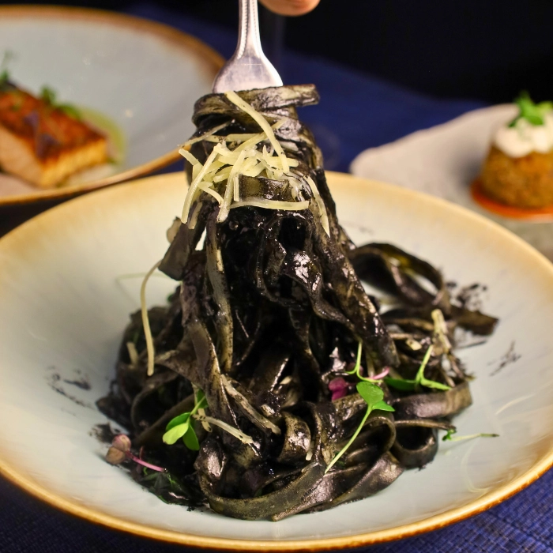

7 Must-Try Dishes At Buena Vista That Every NYC Foodie Needs To Experience

Buena Vista delivers the best parts of Latin cuisine — the flavor, the soul, the ambiance — with upscale finesse.
This Hell's Kitchen gem is the vision of Chef René Hernandez — trained at the legendary El Bulli under Ferran Adrià — who blends the culinary traditions of Cuba, Puerto Rico, Mexico, and South America with the precision of European fine dining. The cocktail program is just as impressive: 12 handcrafted signatures built around tequila, mezcal, pisco, and rum, alongside a wine list spanning Spain, Argentina, France, and Italy.
With a perfect 5.0 across over 1,000 Google reviews, this isn't a hidden gem anymore. But it still feels like one. Here are the dishes (and one cocktail) that made me fall in love with this place.
Raviolis De Langosta

This is the dish I can't stop thinking about.
Each bite is perfectly al dente — tender with just enough chew that you know it's made fresh. Every pillow is stuffed generously with sweet, briny lobster that tastes fresh from the ocean.
The Grey Goose-spiked tomato vodka cream coats every pillow with a rich, fresh flavor – enhanced by fresh porcini mushrooms that perfectly complements the ravioli.
The bright acidity from the tomato keeps the sauce from feeling heavy, and the shaved parmesan adds a salty, nutty finish that lingers on your taste buds.
This sauce is so dangerously addictive… I HAVE to order their ravioli every time I visit.
Paella Buenavista

Each grain of rice is infused with flavorful golden saffron – and the bottom layer of rice is beautifully caramelized and crispy from the heat.
Your first forkful of paella might be filled with juicy shrimp and briny succulent mussels and scallops…
Or smoky chorizo, with its rich, rendered fat soaked into the rice…
Maybe even tender chicken, calamari, or a burst of sweetness from the peppers.
Every bite will keep your palate guessing.
Ceviche Limeño

The sea bass is sliced delicately thin, "cooked" in leche de tigre — that electric, citrus-forward Peruvian tiger's milk that's impossibly bright.
Each piece is silky, almost buttery, with a freshness that tastes like the ocean without a single hint of fishiness.
But the heat is what separates this ceviche from every other restaurant.
Rocoto and yellow Peruvian peppers create a subtle, warm kick that tingles lightly on your tongue, but never overwhelms the fish.
This is the kind of appetizer that makes your mouth water for everything coming next. Acid, salt, fat, and heat – perfectly balanced.
Entraña a la Parrilla

At a restaurant this bold, the steak could easily be an afterthought. It isn't.
The skirt steak arrives with a deeply caramelized char — that beautiful Maillard crust you can only get from a highly-skilled chef.
The chimichurri is garlicky, bright with fresh parsley and oregano, with just enough tang to keep you reaching for the next bite.
And it comes with the perfect amount of golden, crispy, fried cassava for you to soak up every last drop of the sauce.
Magret De Pato

The duck breast arrives with crackling, golden skin, with buttery, rendered fat that melts on your tongue.
The meat is rosy pink and impossibly tender, with that rich, slightly gamey depth that good duck should have. Underneath is a bed of sweet plantain and spinach ratatouille.
The sauce — a 25-year aged port reduction — is dark, glossy, syrupy. It clings to every slice, adding a deep, jammy sweetness that feels indulgent without being heavy.
I had to close my eyes mid-bite to savor the decadent flavors.
Tamal De La Casa

This is easily the most distinctive dish on the menu.
Forget everything you think you know about tamales…
This pillowy masa is filled with sweet, delicate crab, swimming in a saffron-kissed shrimp sauce splashed with Albarino wine.
The texture is impossibly smooth, almost creamy – and the crab is sweet and oceanic without being overpowering.
This rich, golden sauce is unlike anything I've ever tasted.
Margarita de Guayaba y Albaca

You can't leave Buena Vista without trying their signature margarita.
Lalo Blanco Tequila shaken with Cointreau, tropical guava puree, fresh-squeezed lime, and muddled basil — served with a Miguelito rim that adds a sweet-spicy kick with every sip.
It's refreshing, vibrant, and dangerously easy to drink. The guava adds a lush, tropical sweetness that plays beautifully against the bright citrus and herbal basil notes.
Order one while you wait for your table — you'll be ordering a second before your appetizer arrives.